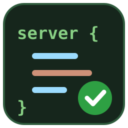
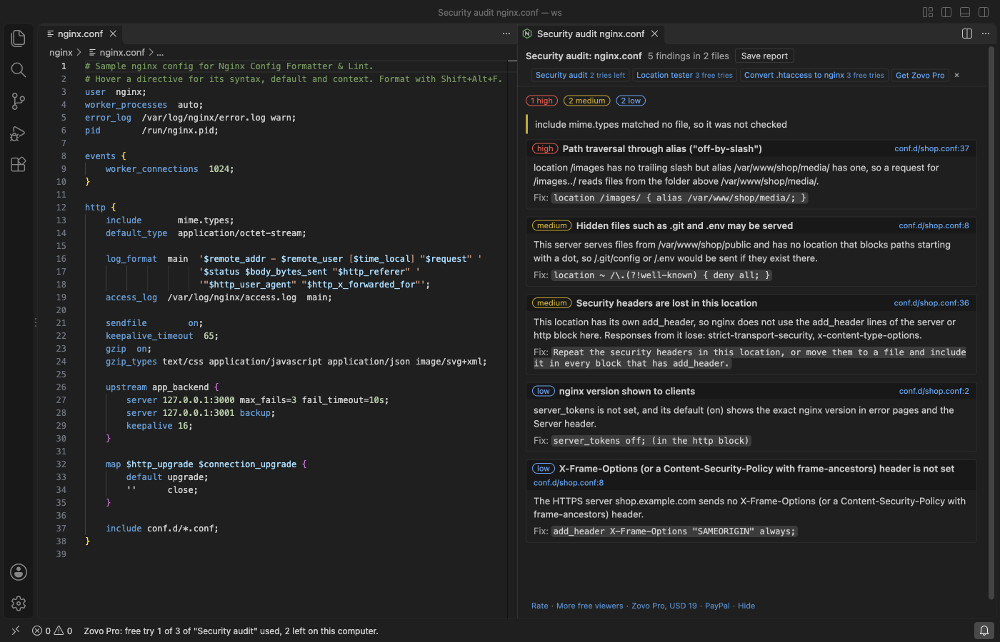

Nginx Config Formatter & Lint
Nginx Config Formatter & Lint, a VS Code extension by Zovo
Format and check nginx config files in VS Code. Correct syntax colours, a formatter that never breaks a valid file, problems shown while you type, hover help for every common directive, and an overview of your servers and locations across include files. Everything runs on your computer.
Free, MIT license. Needs VS Code 1.90.0 or newer. Extension ID zovo.zovo-nginx-config, version 0.1.0.
Zovo Pro: USD 19 once, every Zovo tool. Formatting, checks, hover help and the overview are free.

Questions people ask
Is Nginx Config Formatter & Lint free?
Yes. Nginx Config Formatter & Lint is free and MIT licensed.
How do I install Nginx Config Formatter & Lint?
Click "Install in VS Code" above, or search for zovo.zovo-nginx-config in the Extensions view.
Free
- Syntax colours for directives, blocks, location modifiers and regexes, variables, strings, sizes and times, and Lua blocks (
content_by_lua_block) coloured as Lua - Formatter (Format Document): one statement per line, indentation from your editor settings, long
log_formatvalues keep their line breaks, at most one blank line in a row (setting). It parses its own result and changes nothing if the file would not read the same, so a valid config stays valid - Problems while you type: missing
;, unclosed or extra braces, unclosed strings, a directive in the wrong block (listenin a location,proxy_set_headerinsideif), duplicaterootorlisten, two servers with the same name on one port,ssl on - Quick fixes: add the missing
;, fix a directive name typo (proxy_set_heder->proxy_set_header) - Directives of OpenResty/Lua, headers-more, Brotli, Passenger and other common modules are known and never marked
- Hover: syntax, default value, allowed blocks and a short description for about 300 directives, with a link to the nginx documentation
- Completion of the directives allowed in the current block, and of variables after
$ - Outline: servers with their names and ports, locations, upstreams, maps
- Config overview: every server with its listen ports and names, and its locations with what each one does, across
includefiles, with links to each line
Files open as nginx when they are named nginx.conf or *.nginx, or sit in a folder whose name contains nginx (/etc/nginx/sites-enabled/site, docker/nginx/default.conf). For any other file, pick "nginx" as the language mode.
Zovo Pro tools
Each tool has 3 free tries on your computer. A try counts only when the tool showed its result.
- Security audit: checks the config with all its include files and lists each finding with file, line, why it matters and the fix. It looks for TLS 1.0 and 1.1, weak ciphers, HTTPS servers without HSTS and other security headers, locations whose own
add_headersilently drops those headers, thealias"off-by-slash" path traversal,proxy_passto a host taken from the request, redirects that put the decoded$uriin a header, served.gitand.envfiles, folder listings, an unlimited request body, and HTTP servers that serve pages next to an HTTPS one. Save the report as Markdown. - Location tester: enter a URL and see which server block and which location answer it, step by step, with nginx's own rules (exact names, wildcards, regex names, default_server;
=, longest prefix,^~, regex order, nested locations), and what happens next: the proxy target with the rewritten URI, the file path forrootoralias, or the redirect. - Convert .htaccess to nginx: RewriteRule with its RewriteCond lines (several conditions become a flag variable, since nginx has no AND in
if), the front-controller pattern becomestry_files, plus Redirect, RedirectMatch, ErrorDocument, DirectoryIndex, Options Indexes, Header, Expires, access rules, Basic auth and<Files>blocks. A line that cannot be converted stays in the result as a comment with the reason.
The tools are in the toolbar of the overview, in the Command Palette under Nginx, and on the Explorer right-click menu. Turn them off with nginxConfig.showProTools.

Settings
| Setting | Default | What it does |
|---|---|---|
nginxConfig.lint.enabled | true | Check files while you type |
nginxConfig.lint.unknownDirectives | info | info, warning or off for directives this extension does not know |
nginxConfig.format.maxBlankLines | 1 | Blank lines kept in a row |
nginxConfig.prefix | empty | The folder relative include paths start from (for example /etc/nginx) |
Known limits
- The formatter puts one space between a directive and its values; column alignment (
listen 80;) is not kept. - The checks read your files; they do not run
nginx -t. Some errors only nginx itself can find (a missing certificate file, a module that is not loaded). - Location regexes are tested with JavaScript regular expressions. A few PCRE-only features (possessive quantifiers, recursion) cannot be tested and are reported as skipped.
- Relative includes are read from
nginxConfig.prefix, the file's folder, its parent folder or/etc/nginx, in that order.
Guides
- Format and check an nginx config file in VS Code
- Find which nginx server and location answer a URL
- Why server-level add_header lines vanish inside a location
- Check an nginx config for security problems
- See every nginx server and location across include files
- Nginx Config Formatter Online, free in your browser with no upload
Install Nginx Config Formatter & Lint
Click the button to open VS Code and install it, or press Ctrl+P (Cmd+P on macOS) in VS Code and run ext install zovo.zovo-nginx-config.
Free, MIT license. Needs VS Code 1.90.0 or newer. Extension ID zovo.zovo-nginx-config, version 0.1.0.
Source code and issues are on GitHub.
Zovo Pro and support
Zovo Pro: USD 19 once, every Zovo viewer. It turns on the Pro tools in this extension and in the other Zovo extensions you use. The free features stay free.
After a card payment your license key shows on the next page. Paste it with the command "Zovo Pro: Enter a key".
You can also support the work with no Pro:
Need your format supported?
Open a format request with a sample file, and I reply there whether it can be done. For USD 299 once, through this GitHub Sponsors tier, I add your file format or a missing feature to this extension, with tests, within 7 days.